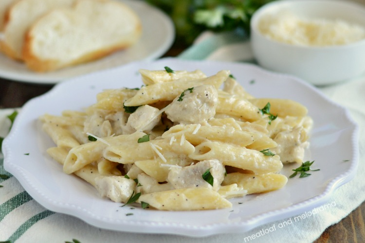
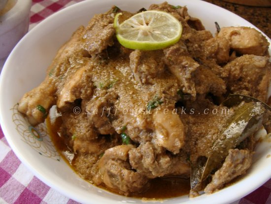
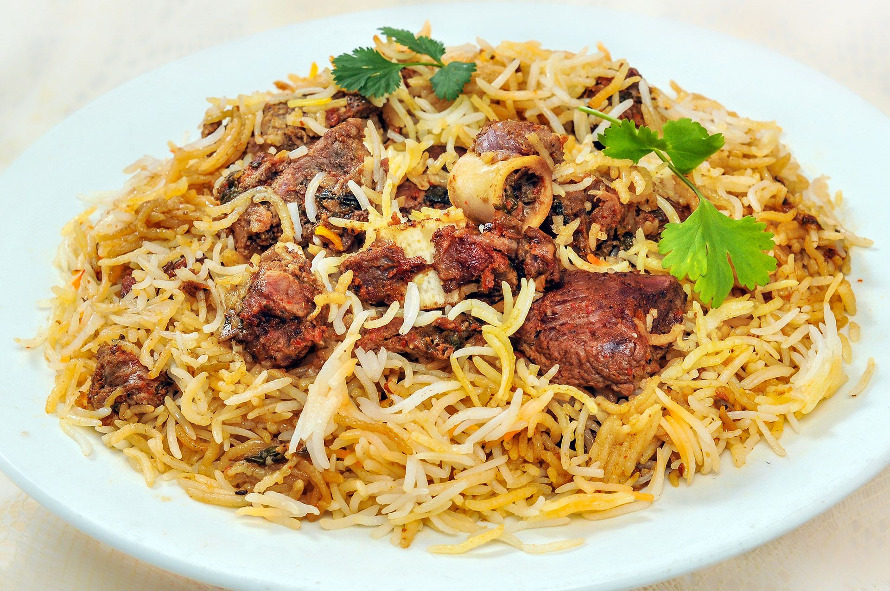
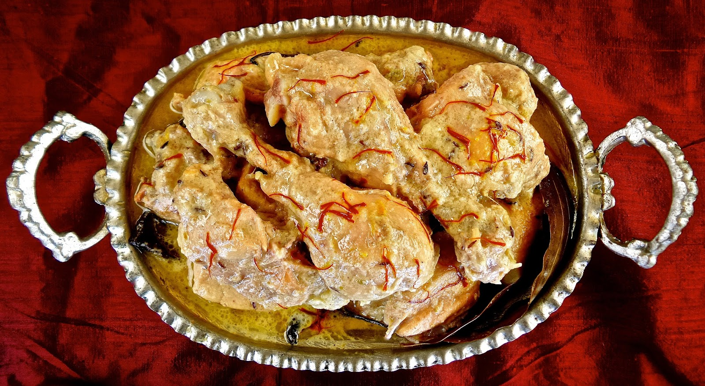

You can learn to cook too
Do activities you're passionate about - which make your heart and soul feel perky - including things like working out, cooking, painting, writing, yoga, hiking, walking, swimming, being in nature, being around art, or reading inspiring books.
Read more
White Sause Pasta

Tired of eating Red Tomato Pasta? Try this White Sauce Pasta! With its silky smooth and aromatic sauce made from butter, milk and all purpose flour (maida), it’s a guaranteed way to delight your taste buds.
Read more
Doi Chicken

Learn how to make Dahi Chicken step by step on Times Food. Find all ingredients and method to cook Dahi Chicken ...
Read more
Kacchi Biriyani

How to Make Mutton Biryani. Marinating the mutton: 1.To the mutton add the beaten curd, ginger-garlic paste, raw papaya paste, chilli powder, salt, lemon juice, garam masala. 2.Allow the mutton to marinate for 3 hours.
Read more
Chicken Rezala

How to make Chicken Rezala Step by Step. Soak cashew nuts and poppy seeds in warm water for 10 minutes. Make a smooth paste in a blender. Mix chicken, ginger paste, garlic paste and yogurt in a bowl and marinate for an hour. Heat ghee and oil in a pan.
Read more